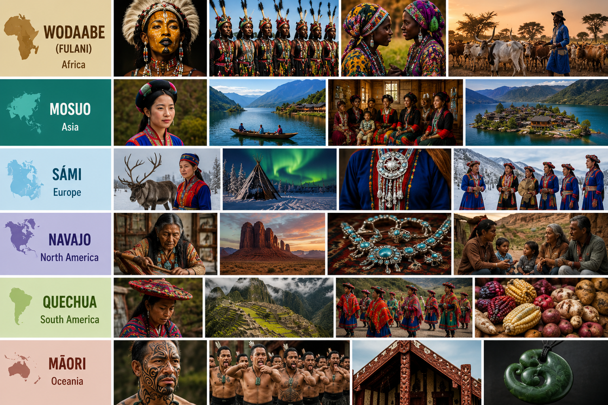

The world is filled with unique cultures, each with traditions that may seem surprising to outsiders.
In some societies, women choose their husbands through beauty competitions.
In others, property is passed from mothers to daughters, or people survive in some of the coldest places on Earth by herding reindeer.
This page explores six fascinating cultures from six different continents.
Imagine a beauty pageant where men are the contestants and women are the judges.
The Wodaabe people of West Africa are famous for the Gerewol Festival, an annual celebration where young men compete for female attention.
Participants spend hours applying makeup, decorating their faces, and wearing colorful clothing.
During the festival, they dance for long periods while emphasizing features considered attractive, such as bright eyes, white teeth, and height.
The Wodaabe are traditionally nomadic cattle herders.
Their cattle are not only a source of food but also a symbol of wealth and social status.
Because they move frequently in search of grazing land, their lifestyle is very different from that of people living in modern cities.
What would society look like if families were centered around women rather than men?
The Mosuo people, who live near Lugu Lake in China, are known for their matrilineal society.
Property is traditionally passed from mothers to daughters, and children are raised within their mother's household.
One of the most unusual aspects of Mosuo culture is the practice commonly called "walking marriage".
Couples may have romantic relationships while continuing to live separately with their own families.
Children remain with their mother's family, where uncles often play an important role in raising them.
Life above the Arctic Circle is extremely challenging, yet the Sámi have adapted to it for centuries.
The Sámi are the Indigenous people of northern Norway, Sweden, Finland, and parts of Russia.
Reindeer herding has long been an important part of their culture and economy.
Their traditional clothing is colorful and beautifully decorated, often reflecting a person's region or family background.
The Sámi are also known for "joik," one of Europe's oldest musical traditions.
Unlike ordinary songs, a joik is designed to represent a person, animal, or place rather than simply describe it.
Their culture demonstrates how humans can thrive even in some of the harshest environments on Earth.
For the Navajo people, living in harmony with nature is one of life's most important principles.
The Navajo Nation is one of the largest Indigenous communities in North America.
Their traditions emphasize balance, respect for nature, and strong family connections.
Navajo artisans are famous for their weaving and silver jewelry.
Their handcrafted rugs are recognized worldwide for their beauty and intricate patterns.
Storytelling is another important tradition.
Stories are used not only for entertainment but also to teach values, preserve history, and pass knowledge from one generation to the next.
The Quechua are descendants of the powerful Inca civilization, one of the greatest civilizations in South American history.
Today, many Quechua communities still live in the Andes Mountains, often at extremely high altitudes.
They have adapted to mountain life through generations of experience.
Their colorful clothing features detailed woven patterns that can identify a person's community or region.
Agriculture remains important, and many Quechua farmers continue to cultivate crops such as potatoes and corn using techniques developed centuries ago.
The Quechua language is still spoken by millions of people, making it one of the most widely used Indigenous languages in the Americas.
The Māori people of New Zealand are known worldwide for the haka, a powerful performance that combines chanting, rhythmic movements, and intense facial expressions.
Traditionally, the haka was performed before battles, but today it is also used during celebrations, ceremonies, and sporting events.
Another important aspect of Māori culture is tattooing.
Traditional Māori tattoos are not simply decorations; they tell stories about a person's ancestry, achievements, and identity.
Family, community, and respect for ancestors are central values in Māori society, helping preserve traditions that have been passed down for generations.
Although these cultures come from different continents, they all show the incredible diversity of human societies.
From the beauty competitions of the Wodaabe to the matrilineal families of the Mosuo and the haka of the Māori,
each culture offers a unique perspective on how people live, celebrate, and connect with one another.
